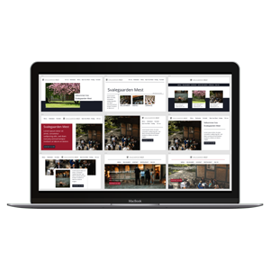
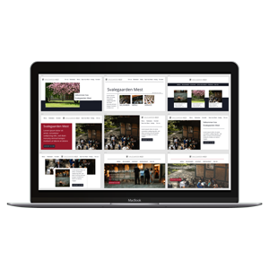

SVALEGAARDEN MEST -
REDESIGN AF WEBSITE
2019 / 2020
Projektet er uarbejdet for Svalegaarden Mest i december 2019 og januar 2020.
Projektet havde til formål at designe et website til Svalegaarden Mests privat kunder,
da deres nuværende var til både privat og erhvervskunder. Fokus i projektet var at designe
et website, der tydeligt viste, hvilke services at virksomheden tilbød, og hvor det var let
at navigere på siden, så brugerene fik den nødvendige viden.
Projektet er udarbejdet i samarbejde med Miriam Thun Madsen,
Oliver William Lundvald Christensen og Daniel Hauge Grunnet.
PROCESSEN
 

BRUGERUNDERSØGELSER
Der er udarbejdet brugerundersøgelser med fokus på at identificere forbrugeres motivation for at spise ude samt hvilken information de finder nødvendig på et website for et spisested. Der er her udført interviews på relevante personer indenfor målgruppen.
UDVIKLINGSMETODE
Der er arbejdet med udviklingsmetoden rapid prototyping, der er en iterativ proces, hvor fokus er på undervejs at teste for derefter at rette produktet til. Her er den kreative proces i fokus, og alle projektgruppens medlemmer er involveret.
DESIGN
Fokus var at designe et website der ramte den meget specifikke målgruppe Svalegaarden Mest har. Herudover skulle den er tydeligt viste, hvilke services at virksomheden tilbød. Brugeroplevelsen skulle være intuitiv og websitet skulle være nemt at navigere på.